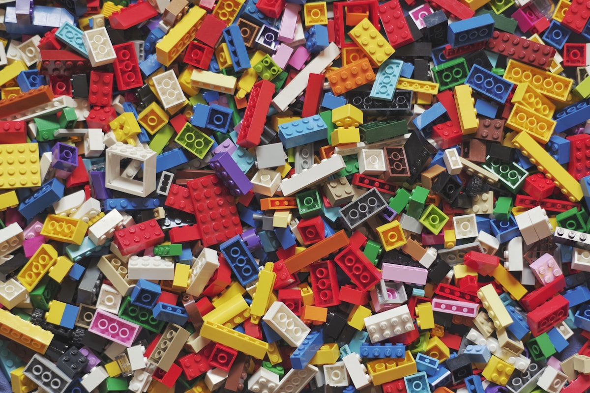

01
Adaptasi bertahap
Durasi awal disesuaikan agar anak dan orang tua membangun rasa aman.
Rutinitas yang konsisten, kelompok usia terarah, komunikasi harian, dan ruang yang dirancang agar anak bermain sekaligus belajar mandiri.

Pilih kelompok usia untuk melihat contoh fokus program dan ritme harian.
Fokus pada adaptasi, komunikasi awal, motorik, makan mandiri, dan transisi aktivitas yang lembut.
Durasi awal disesuaikan agar anak dan orang tua membangun rasa aman.
Makan, tidur, aktivitas, suasana hati, dan informasi penting dirangkum.
Identitas penjemput dan perubahan izin harus tercatat.
Aktivitas aktif, tenang, makan, dan istirahat disusun seimbang.
Jadwalkan kunjungan dan bawa semua pertanyaan Anda.